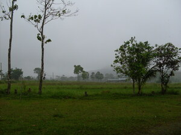
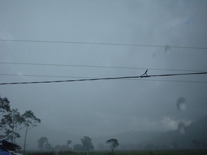
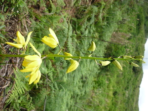
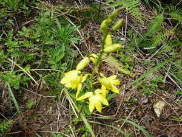

uran    
/ʔudan/
n.
“rain”
1.
n.
rain
Wrd.Gloss: rain
Ken-kena niyud ka dinampil niyu ne aheley su sikan e ka dakel ne uran.
Gather and bag the dried corn because heavy rain is coming.
Eng. rain
Tag. ulán
Ceb. ulan
Ilo.: túdo
Tigwanon: ʔudan
Binukid: ʔudan
Dibabawon: ʔudan
Cotabato Manobo: ʔudan
Sarangani: ʔodan
WBM: ʔuzan
Ilianen: ʔuran
Cagayano: ʔuran
Kinamigin: ʔuran
Obo: ʔuran
Proto: ʔudan
OCM: Ethnometeorology (821)
DDP: Rain (1.1.3.3)
Online dict status: -
Usage level: B
vi.
for it (eg-uran, mig-uran/in-uran, actor & theme, eg><ø-) to rain on someone or something (eg-uranan, in-uranan/mig-uranan/pig-uranan, location, eg><an-)
Egsaliyuwan kud e ka atep ney ne kalan te sin su eg-uranan e.
I'll change our roof being made from cogon
Eg-uran e te mahaan su egpaddusilem e.
It will rain soon because the dark clouds going very thick.
Eng. rain, to
Tag. umulán
OCM: Ethnometeorology (821)
DDP: Rain (1.1.3.3)
Online dict status: -
Usage level: F
vi.
for it (eg-uran-uran, mig-uran-uran/in-uran-uran, actor & theme, eg><ø-rdpRT-) to keep on raining
Eg-uran-uran ka bulan te pista kayi te simud.
The month of our fiesta here in Sinuda is rainy.
Eng. rain always, to; rain constantly, to; keep on raining
OCM: Ethnometeorology (821)
DDP: Rain (1.1.3.3)
Online dict status: -
Usage level: F
adj.
(ting-uran) rainy season
Eng. rainy season
Online dict status: -
Usage level: M
2.
n.
(uran-uran, rdpRT-) wildflower variety
Cult. Usually yellow, white and violet colors of their petals and also growing in a rainy season.
Eng. wildflower variety; flower variety
OCM: Flora (137)
DDP: Plant (1.5)
Online dict status: -
Usage level: R
Updated by: RJH,AAA,RJH,AAA,QDL,NJK,QDL,NJK,QDL
Last updated: 19/Feb/2010
"uran" in text "Due daruwan etew ne nekegsinug-ung diye te dalan"
"eg-uran" in text "Due daruwan etew ne nekegsinug-ung diye te dalan"
"uran" in text "Due daruwan etew ne nekegsinug-ung diye te dalan"
"uran" in text "Due daruwan etew ne nekegsinug-ung diye te dalan"
"mig-uran" in text "Due daruwan etew ne nekegsinug-ung diye te dalan"
"uran" in healthbook "Mania teg pakapatey kag iindes?"
"uran" in healthbook "Migderalu si Junjun te malariya"
"uran" in healthbook "Egbuween wey egnguwehen si Lukas"
This page last updated: 19/May/2012
Copyright © 2009-2010, Matigsalug Language Christian Association, Inc